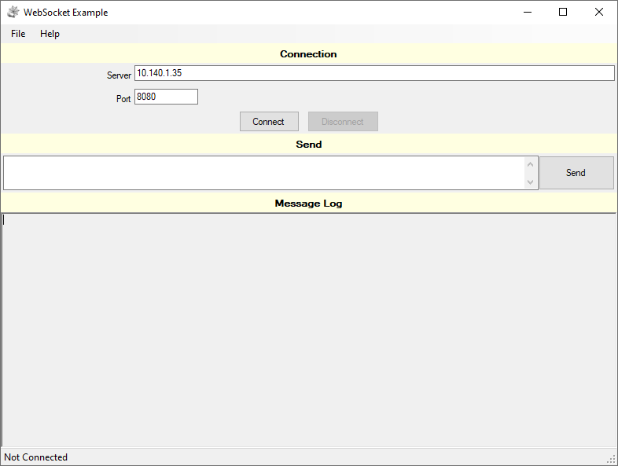
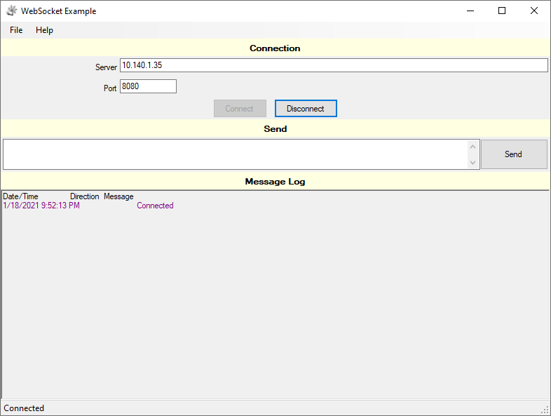
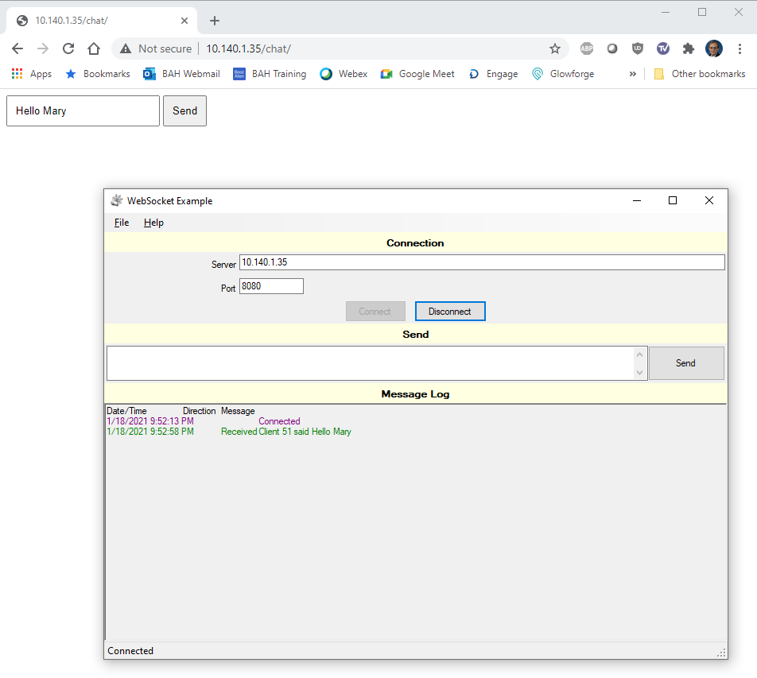
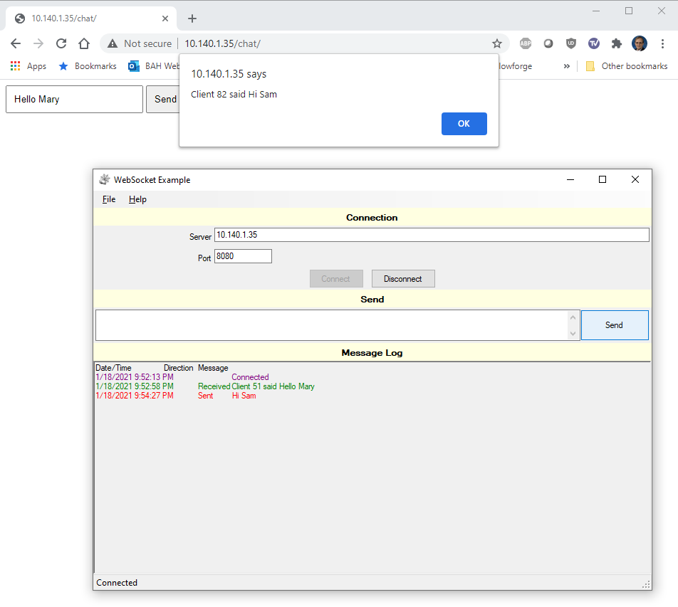
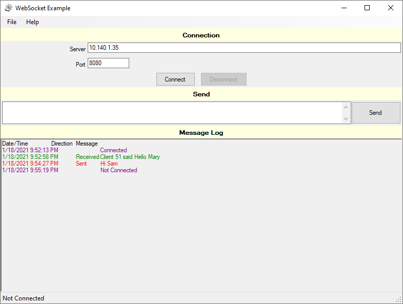

Skip to main content
Building and using the Windows Frontend
The Windows Frontend is written in C# using Visual Studio 2019. It is a
WinForms Application rather than a WPF Application. I typically write my
Desktop Applications in WinForms rather than WPF as I can quickly build
the UI the way I want it to look and behave. I have messed around with
WPF but just have not gotten the hang of it. It is something on my list of
things to learn.
In this sample application, I did learn about globalization and
localization. Although this application is a good example of one way to
accomplish localization, I will not go into details on this as it is not
the focus of this project. If you are a native speaker of German, Spanish,
or Lao, please update the localization files as I used
Google Translate to create the
entries in the following resource files. I'm sure the localized text is
nonsense.
- WebSocketExample\Frontend\TeelSys.Web\WsClient.de.resx
- WebSocketExample\Frontend\TeelSys.Web\WsClient.es.resx
- WebSocketExample\Frontend\TeelSys.Web\WsClient.lo.resx
- WebSocketExample\Frontend\WebSocketExample\Form1.de.resx
- WebSocketExample\Frontend\WebSocketExample\Form1.es.resx
- WebSocketExample\Frontend\WebSocketExample\Form1.lo.resx
Hardware and Software used
-
Raspberry Pi setup with the chat backend. (See the
backend page for details.)
-
Windows PC
- OS: Windows 10 (64-bit)
- Visual Studio 2019
Code - The Visual Studio Solution
The Visual Studio Solution contains several projects. There is much more
included in this project than what is required to exchange information
with a WebSocket server. The TeelSys.Web.WsClient class is the heart of
the example and is the one to focus on for implementing a Web Socket
client in a C# application.
-
TeelSys.Globalization - Provides classes to assist
with Localization of text displayed to the end users.
-
LocalizedResourceHelper - Static class to get localized
text from resource files.
-
TeelSys.Settings - Provides classes to allow the
application to save and load settings. With the use of this library
it is not necessary to retype the Server IP Address and Port each
time the application is launched.
-
AssemblyDetails - Structure to hold information about the
application such as Company, Copywrite, Description, Name, Title,
and Version.
-
AssemblyInformation - Static Class with one static method
to gets the application information and return it as an
AssemblyDetails structure.
-
SettingFileTypes - An enumeration to indicate the type
of setting file as either Application or User.
-
SettingsEventActions - An enumeration to indicate if an
event is a load or save event.
-
SettingsEventArgs - An event arguments class to be used
by the settings events being handled by the application.
-
SettingsHandler - A class to provide methods for loading,
saving, and deleting settings files.
-
WindowSettings - Class for saving the position and size of
the Windows Form.
-
TeelSys.Web - Library which provides classes for
working with web-based resources.
-
ConnectionStateChangedEventArgs - An event arguments
class to be used when handling events being raised when a web
class's connection state changes.
-
ErrorEventArgs - An event arguments class to be used when
handling events being raised when an error is raised within a web
class.
-
MessageReceivedEventArgs - An event arguments class to
used to be used when handling message received events being raised
within a web class.
-
WebContent - Class to be used to request content from a
web application such as a web page.
-
WebHelper - A Static Class with a method for building a
URL from separate strings.
-
WsClient - Used to send and receive messages to and from a
WebSocket server. (This is the important class in this example.)
-
WebSocketExample - The WinForms project which
provides the User Interface.
-
Form1 - The User Interface
-
Program - The entry point for the application
-
UserSettings - A class to hold the settings for the
application with the ability to load and save the settings.
Using the Application
Once you have compiled the code, you may run the application. Below are
some screenshots showing the application in use.
-
When you launch the application, enter the IP Address and port for
the chat server, then click the "Connect" button.

-
You will see a message in the message log stating that the application
connected or an error if the connection could not be established.

-
In order to send and receive messages, you need to have a second
chat client running such as a web browser connected to the chat
test page. When you tyoe a message and click the "Send" button,
The message will be displayed in the Message Log of the Windows
application or in a pop-up in the webpage.


-
When connected, you may click the "Disconnect" button in the Windows
application to disconnect from the server.
